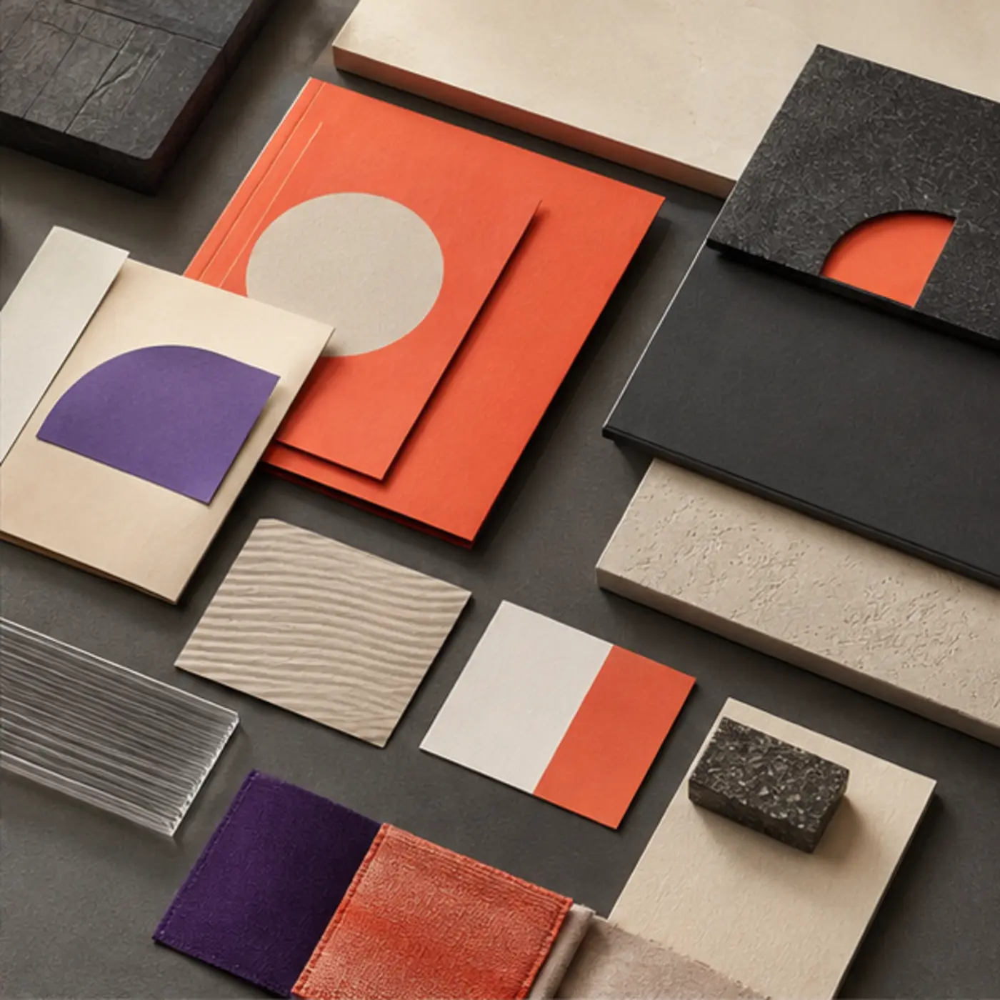
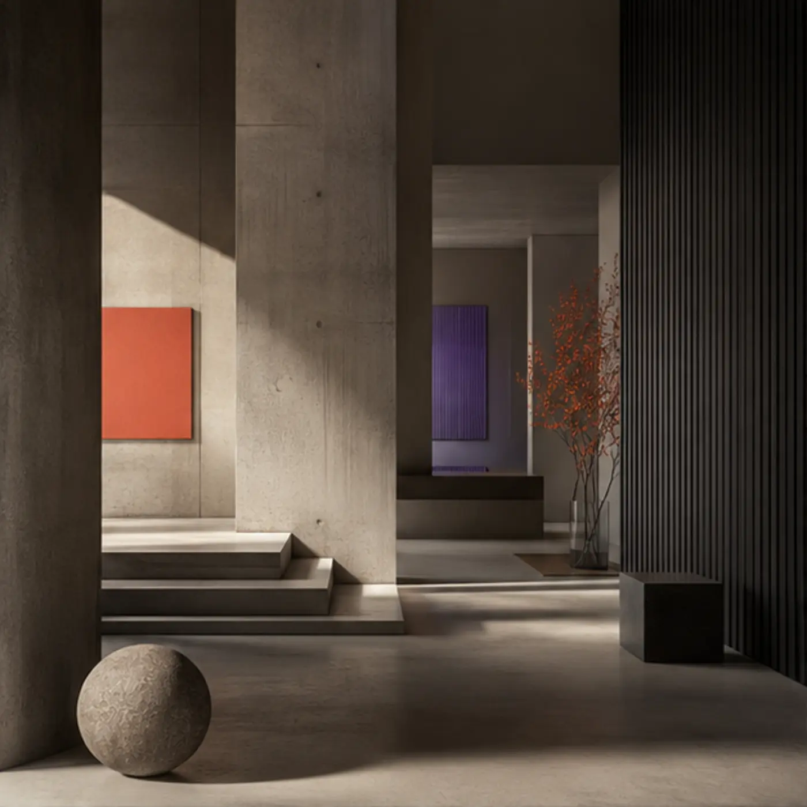
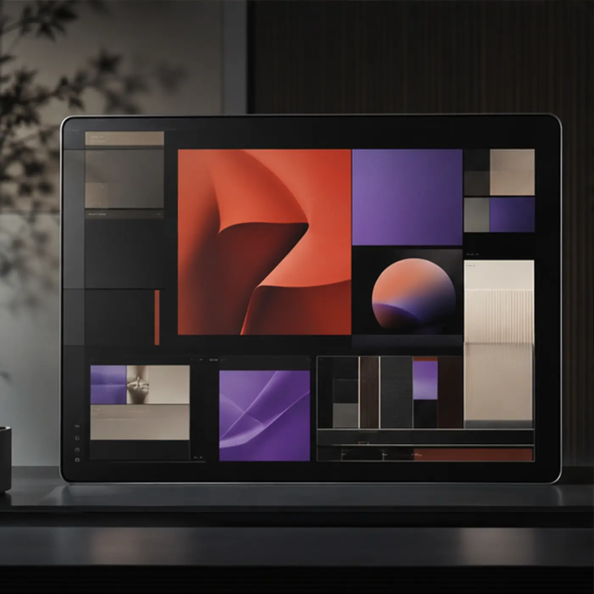

Фирменная система
Orbis: единый язык для растущей платформы
Стратегия, визуальная система и набор материалов для последовательного запуска.
Помогаем продуктам и организациям найти ясное направление, получить цельный визуальный язык и выйти к аудитории без лишнего шума.

Каждый кейс раскрывает задачу, направление, систему материалов и результат — без случайной галереи миниатюр.

Стратегия, визуальная система и набор материалов для последовательного запуска.


Состав работ можно адаптировать под отдельную задачу или объединить в полный цикл.
Позиционирование, аудитория, смысловая структура и план запуска.
Фирменный стиль, визуальная система, сетки и правила применения.
Лендинги, продуктовые и редакционные сайты, интерфейсы.
Контент, материалы, публикация и поддержка первого этапа.
Мы соединяем стратегию, форму и технологию. Поэтому сайт, фирменный стиль и материалы запуска говорят одним голосом и помогают проекту двигаться дальше.